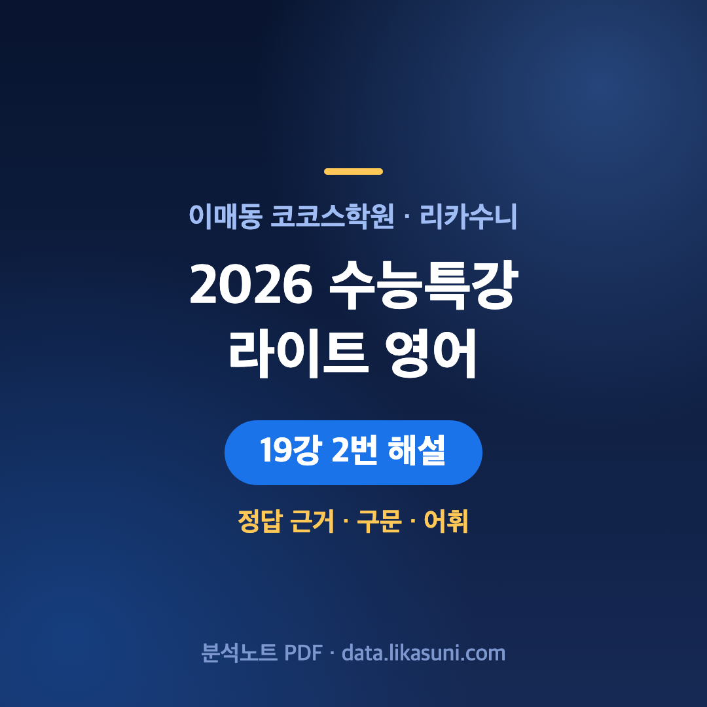
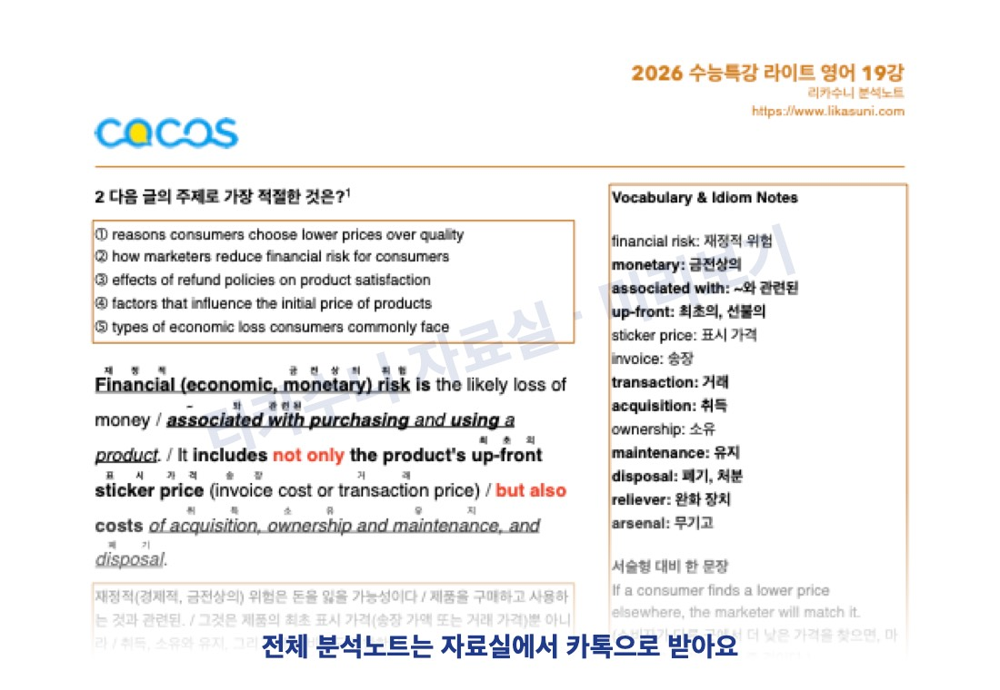

안녕하세요, 이매동 코코스학원 리카수니 원장입니다.
학생 요청으로 2026 수능특강 라이트(Light) 영어 19강 2번 분석노트를 만들었어요.
지문은 교재에 있으니 교재를 펴 놓고 함께 보세요.
· 교재: 2026 수능특강 라이트 영어 (EBS)
· 위치: 19강 2번 (글의 주제)
· 정답: ② (마케터가 소비자의 재정적 위험을 줄이는 방법)
재정적 위험은 제품을 사고 쓰는 데 따르는 돈 손실 가능성이에요.
처음 표시 가격뿐 아니라 취득·소유·유지·폐기 비용까지 포함돼요.
마케터는 더 낮은 가격으로 더 나은 가치를 주는 방식 등으로 이 위험을 덜어 준다는 흐름이에요.
첫 부분은 '재정적 위험'이 무엇인지 정의하고, 뒷부분은 마케터가 그 위험을 줄이는 장치를 소개해요.
→ 글 전체가 '마케터가 소비자의 재정적 위험을 줄이는 방법'을 말하니 ②가 정답이에요.
① 소비자가 품질보다 낮은 가격을 고르는 이유 → 소비자의 선택 이유가 아니라 마케터의 방법이 중심이에요.
③ 환불 정책이 만족도에 미치는 영향 → 위험 완화의 한 예일 수는 있어도 '만족도'는 주제가 아니에요.
④ 초기 가격에 영향을 주는 요인 → 가격을 정하는 요인 이야기가 아니에요.
⑤ 소비자가 겪는 경제적 손실의 유형 → 글 앞부분의 정의일 뿐, 글의 중심은 '줄이는 방법'이에요.

1) the likely loss of money associated with ~
→ 과거분사 후치 수식: '~와 관련된 돈 손실 가능성'
2) not only A but also B: 처음 표시 가격뿐 아니라 여러 비용도 포함
3) is offering ~ (보어 동명사), giving ~ (분사구문: 그래서 ~을 주면서)
· financial risk 재정적 위험
· monetary 금전상의
· associated with ~와 관련된
· up-front 최초의, 선불의
· sticker price 표시 가격
· invoice 송장
· transaction 거래
· acquisition 취득
· ownership 소유
· maintenance 유지
· disposal 폐기, 처분
· reliever 완화 장치
· arsenal 무기고
분석노트 PDF 에 '서술형 대비 한 문장'(조건 if 문장)과 해석을 정리해 두었어요.
끊어 읽기·해석·구문이 정리된 PDF 는 리카수니 자료실에서 카카오 로그인 후 카톡으로 받을 수 있어요.
수능특강 라이트 다른 강·번호도 요청할 수 있어요.
▶ 분석노트 요청하기 (리카수니 자료실)
https://data.likasuni.com/notes/#note-req
※ 지문 출처: 한국교육방송공사(EBS) 2026 수능특강 라이트 영어. 지문·선택지 원문과 전체 해석은 싣지 않았어요.
분당 이매동 코코스학원은 초등·중등·고등 영어와 수학을 가르쳐요.
수능특강·모의고사·내신 대비가 궁금하시면 편하게 문의해 주세요.
· 홈페이지: https://www.cocosedu.co.kr/
· 주소: 경기 성남시 분당구 판교로 476 2층